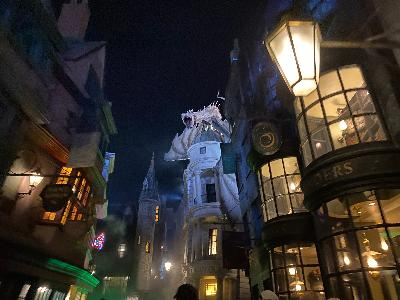

Hello! My name is Jing. I'm currently a Master's student at the University of Florida studying Mass Communication.
I currently live in Orlando, Florida, also known as the theme park capital of the world. I live very close to both Universal and Disney World. When it's not extremely hot or humid outside, I visit the theme parks alone and spend my day there if I have the time.
If you are ever planning to visting Universal Orlando, here's my list where I ranked the top 5 rides across both parks:
VelociCoaster is the best and the smoothest coaster I've ever been on. This is a thrill coaster that can give adrenaline rush from the queue line. This is a must ride if you are visiting Universal Orlando. It has a single rider line, but it's closed most of the time. This ride is located in the Island of Adventure park. More info
AMAZING thrill coaster even if you're not a Harry Potter fan. It's less intense than VelociCoaster, but the theming is the just out of the world. It has a single rider line (very slow & do not recommend using it). This ride is located in the Island of Adventure park. More info
This is an indoor dark ride. Both the queue and the ride are very well themed. It has a single rider line (recommend using it). This ride is located in the Universal Studios park. More info
This is a partially dark ride and a water ride. You wouldn't get soaked, but there will be water splashing you face. This ride is located in the Island of Adventure park. More info
This is a classic dark ride. It may look a little outdated, but it's a must ride. This ride is located in the Universal Studios park. More info
Here's a photo I took at the Diagon Alley in the Universal Studios park:
I'm really into K-pop and discovering new K-pop groups. I also watch a lot of Korean variety shows. My favorite show is New Journey to the West. Other than that, I also like to attend Hackathons so I could chug Celsius (my favorite engery drink) while coding for 36 hours straight.
My GitHub Page